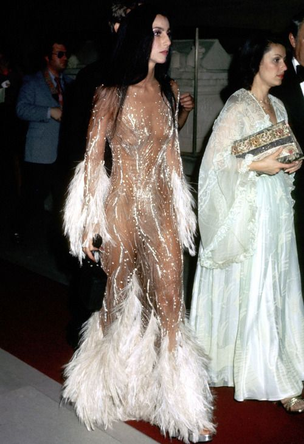

Cher in Bob Mackie, 1974
This dress was just so cool.

Bob Mackie made this dress for Cher to wear when she attended the first MET gala. In an interview with Vogue, she recalls being asked by a paparazzo "How she felt being naked?", to which she replied, "I feel just fine." The dress was made of a see through material that was outlawed in the United States at the time. Because crystals were sewn onto the matieral, when Mr. Mackie sprayed the dres with mist, it stuck to Cher's skin, giving the effect that crystals were embedded onto her skin.
Home